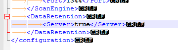
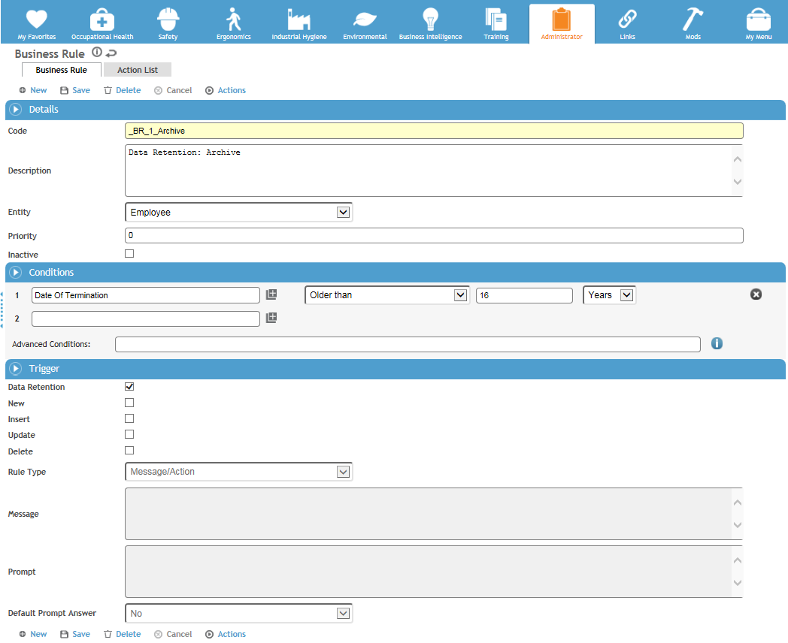
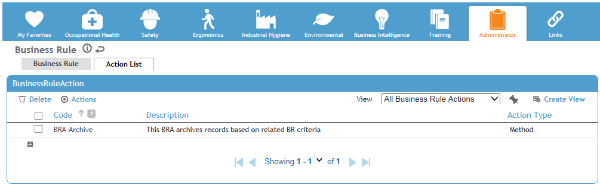
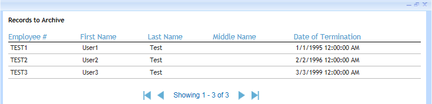
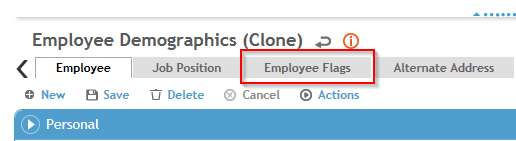
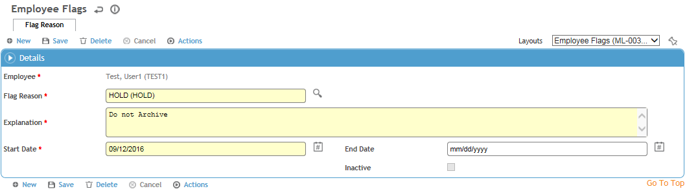
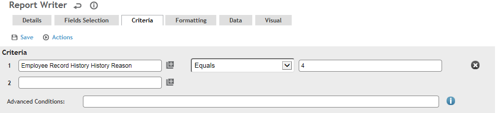
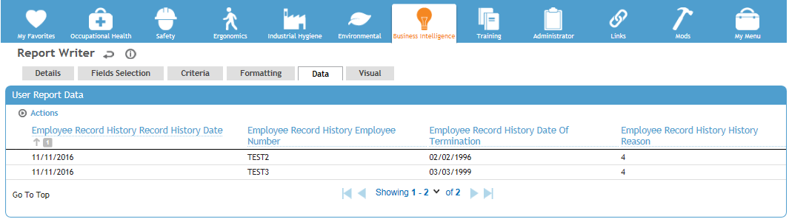

When configuring data archive or purge, you can set up business rules to fire based on specified time criteria instead of a particular action or event (for example, an administrator can schedule a business rule to archive an employee’s records when exactly five years have passed since the employee’s termination date).
The following procedures can be used for setting up and reporting on data archive and purge.
To enable this functionality, in the <your Cority domain>\config\server.config file DataRetention must be set to TRUE.

With this functionality there is no rollback, so you must be very careful to ensure that the conditions for these business rules meet your requirements.
To set up employee record archiving:
Archive and purge business rules should only be set up using the Employee entity.

Archiving removes the Employee record and any associated records (Audiometric tests, Clinic Visits, etc.) for that employee from the system. An exception to this is if the employee is referenced on another employee’s record(s), e.g. as a supervisor or witness; in that case, the archived employee’s demographics record would be retained through those records.
For additional information on working with business rules, see the Cority User Guide.


This displays all the employee Demographics records that meet the criteria conditions specified on the business rule and will be archived once the process has run.
You can prevent records for certain employees from being archived, even if they meet the conditions defined in your business rule for archiving.
To prevent records for certain employees from being archived:


Once a Flag Reason of Hold is created for the Employee record, the employee's records cannot be archived. To return the employee to the pool of employees who can be archived, simply delete the Flag Reason record.
Important: Once an employee has been archived, the Employee record and all associated records for that employee will be permanently deleted. A row (visible to administrator users only) indicating a status of Archived will be added to the Record Change History of each relevant list view.
To report on archived Employee records:

